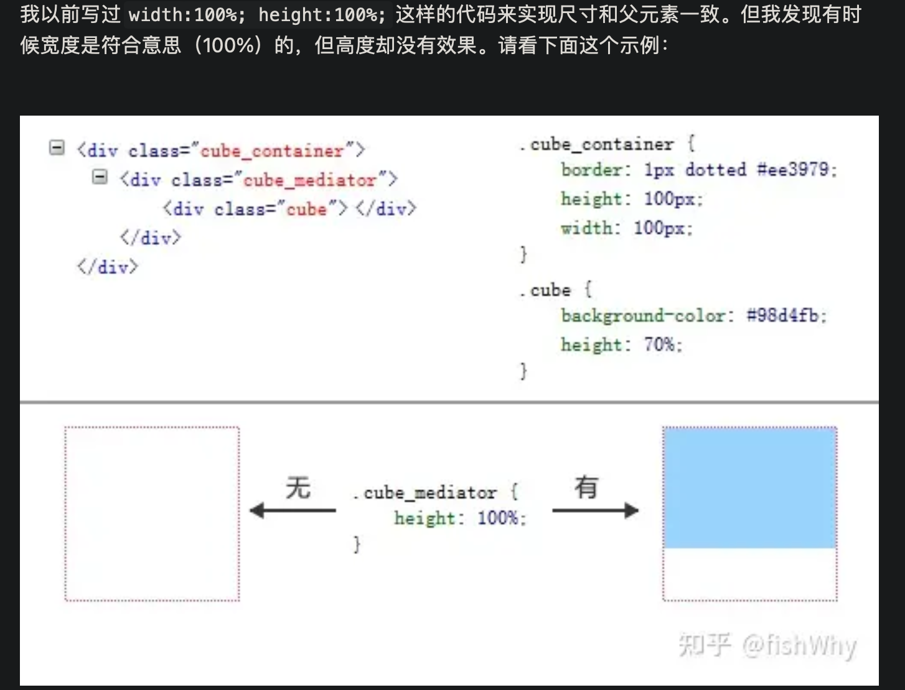

2023-02-20
宽度-高度百分比说明
修改于: 2023-02-20关于height这种设置的属性为百分比计算
一般情况下, 不为绝对定位时候是使用父元素的宽高计算的. 更确切地说是 包含块: 父元素的内容区（盒模型里的content）
实际生效的具体值的计算方式为:
元素的包含块大小 * 设定的百分比
注解
一般情况下, 不是绝对定位元素( position: absolute | fixed)、根元素 html 以及根字体, 元素的包含块就是父元素
- 什么是元素的包含块?
元素的包含块是指元素用来计算和定位的一个框;
对于开启绝对定位的元素来说，其包含块是离它最近的开启了定位（且position不为static）的祖先元素; 如果所有的祖先元素都没有开启定位，则其包含块就是初始包含块;
一般情况下，根元素（在很多场景下可以看成<html>）被称为初始包含块，其尺寸等同于浏览器可视窗口的大小; 对于其他元素，如果该元素的position是relative或者static，则包含块由其最近的块级祖先元素content box边界形成; 如果元素的position为fixed，则包含块是初始包含块; 如果元素position为absolute，则包含块由最近的position不为static的祖先元素建立;
有时候会发现设置的高度没有生效
原因是: 当一个元素的高度使用百分比值， 如果其包含块没有明确的高度定义（也就是说，取决于内容高度）， 且这个元素不是绝对定位，则该百分比值等同于auto。auto是初始默认值，所以看起来就像是“失效”了。

示例